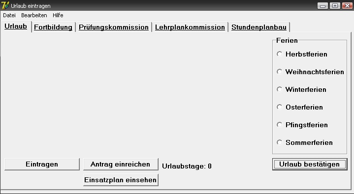
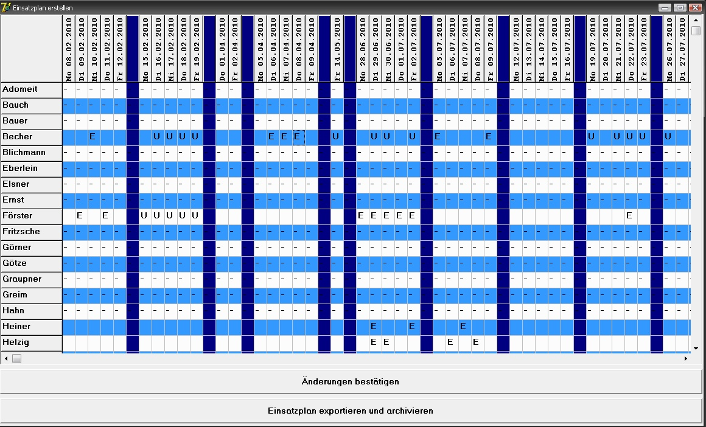

Dieser Bereich ist für Lehrer irrelevant
Fachbereichsleiter und Schulleiter haben die Aufgabe die Urlaubstage der Lehrer zu bestätigen. Hierzu muss nur auf den Button mit der Aufschrift "Urlaub bestätigen" geklickt werden. Anschliesend geht ein neues Fenster mit den beantragten Urlaubstagen der Lehrer aus dem jeweiligen Fachbereich auf.
Hier kann ganz rechts mit Doppelklicks auf die Kästchen unter "bestätigt" und "genemigen" der Urlaubsplan angenommen werden.
Der stellvertretende Schulleiter plant den Ferieneinsatz der Lehrer indem er unter "Urlaub bestätigen" die gewünschten Termine zu denen ein Lehrer zum Ferieneinsatz verfügbar sein soll mit einem Doppelklick anwählt und damit den Einsatz festlegt.
